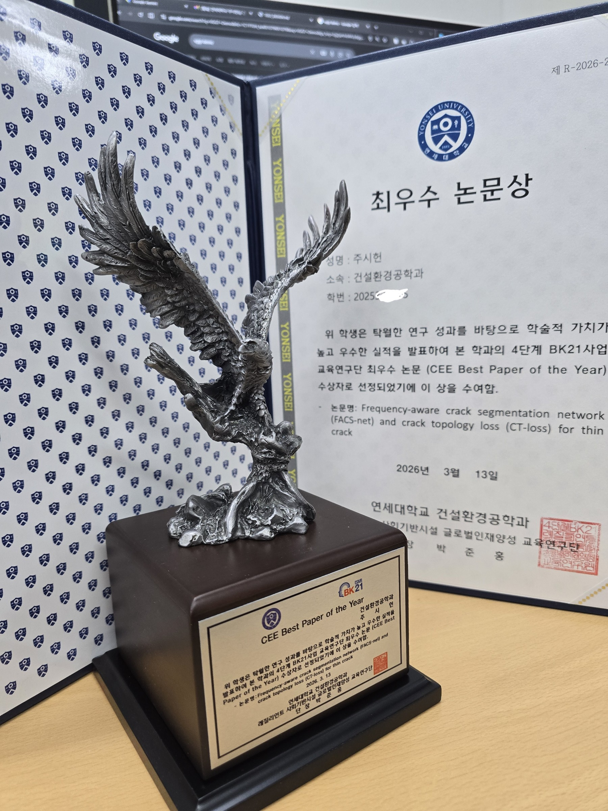

Mar 2026 · Honor
Honoured with the CEE Best Paper of the Year
FACS-Net & CT-Loss were named CEE Best Paper of the Year (2026) by Yonsei's BK21 group in Civil & Environmental Engineering. The recognition landed in my very first semester — a welcome vote of confidence for work that aims at both methodological depth and real construction-site value.